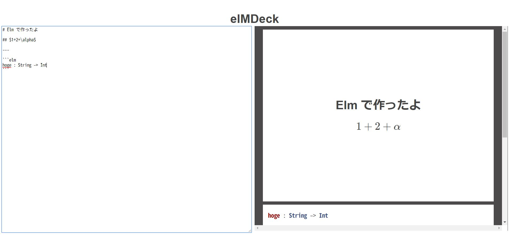

Elm でマークダウンプレゼンテーションエディタを作ってみた (その１)
Elm Advent Calendar 2017 (その２) の18日目の記事です．
ぼくが18日目に登録したとき(12月6日ごろ)は半分以上が空いてたのに全部埋まってる(笑) みんなすごいなぁ．
タイトルの通り，思い付きで作り始めたマークダウンプレゼンテーションエディタについて書きます． 全てのコードは以下にあります．
まだ完成していないです． あと正直なこと言うと，まだ使える代物ではないです(笑) 徐々に改善していくつもりです．
MD でスライドづくり
自分はマークダウンでサクッとスライドを作るのが好きで，イロイロ試してみた結果，Marp というツールに落ち着いた． 基本的に不満は無いのだが，プレゼンテーションモード欲しいなーとか，もっと簡単にテーマを作りたいなーとかが微妙にある．
しかし，最近はバージョン1に向けて構成から書き直しているようで更新が止まっている(個人的には，急かすつもりは全くなく，ゆっくり好きなように作ればいいと思ってる)．
なので，自分でイチから作ってみることにした． ちなみに，Marp が再リリースされて，そっちの方で全然満足出来たらそっちに移るつもり．
個人的に最低限欲しい機能は
- シンタックスハイライト
- 数式
- 画像の拡縮
- PDF への出力
があればよい． できればプレゼンテーションモードとか欲しいけど．
作ってく
ちなみに，既にできているのは (1) シンタックスハイライト，(2) 数式 まで． あと，ローカルファイルの読み書きを Elm でする方法(というかブラウザでいい感じにする方法)が分からなかったので Electron にした．
Markdown をスライドへ
戦略としては，テキストエリアで入力してもらったマークダウン表記のプレーンテキストを何らかのパッケージで構文木に変換し，さらに HTML に変換してもらうだけ． そして，変換したマークダウンの構文木を区切りワード --- にしてスライド1枚1枚にするイメージ．
今回は以下のパッケージを使った．
マークダウンパーサーとしては他にも，Elm の作者が作ったモノがあったが，これは Native モジュールで JS の marked を呼んでるだけなので，マークダウンの構文木をいじれない． なので，構文木も扱える pablohirafuji/elm-markdown を使った(その代わり速度は遅い…)．
pablohirafuji/elm-markdown は parse 関数を用いることで文字列から次の Block b i 型のリストに変換する．
type Block b i
= BlankLine String
| ThematicBreak
| Heading String Int (List (Inline i))
| CodeBlock CodeBlock String
| Paragraph String (List (Inline i))
| BlockQuote (List (Block b i))
| List ListBlock (List (List (Block b i)))
| PlainInlines (List (Inline i))
| Custom b (List (Block b i))Block b i 型から Html msg へは toHtml 関数を使えばよい．
elm repl で試した結果，--- は ThematicBreak になることが分かった． なので，ThematicBreak で List (Block b i) を List (List (Block b i)) に分割する． (a -> Bool) -> List a -> List (List a) って感じの関数が無かったので自分で定義した．
markdownView : Model -> Html Msg
markdownView { textarea, window } =
textarea
|> Block.parse Nothing
|> Utils.split ((==) Block.ThematicBreak)
|> List.map (toSlide window)
|> div []
toSlide : Window.Size -> List (Block b i) -> Html msg
toSlide window blocks =
blocks
|> List.concatMap customHtmlBlock
|> slideView window
customHtmlBlock : Block b i -> List (Html msg)
customHtmlBlock block =
Block.defaultHtml (Just customHtmlBlock) Nothing block取りあえずは customHtmlBlock 関数では標準のを呼んでいる． window を引き回しているのは，ウィンドウサイズに合わせてスライドの大きさを拡縮するため．
シンタックスハイライト
シンタックスハイライトは皆さんご存知 highlight.js を使う． Elm 製のパッケージは見当たらなかったので，js のパッケージを使うことにした．
evancz/elm-markdown が highlight.js を使っていたので，それを参考に Native モジュールを作った．
// src/Native/Highlight.js
var _matsubara0507$elmdeck$Native_Highlight = function() {
function toHighlight(lang, code)
{
if (typeof hljs !== 'undefined' && lang && hljs.listLanguages().indexOf(lang) >= 0)
{
return hljs.highlight(lang, code, true).value;
}
return code;
}
return {
toHighlight: F2(toHighlight)
}
}();Elm 側はこんな感じ．
import Native.Highlight
toHighlight : String -> String -> String
toHighlight =
Native.Highlight.toHighlight返ってくるのは "<div>...</div>" のような HTML の文字列なので，これを Html a 型に変換してやる必要がある． それには jinjor 先生の jinjor/elm-html-parser を用いた．
これをこんな感じに呼び出す
customHtmlBlock : Block b i -> List (Html msg)
customHtmlBlock block =
case block of
Block.CodeBlock (Block.Fenced _ fence) code ->
let
language =
Maybe.withDefault "" fence.language
in
code
|> Utils.toHighlight language
|> precode language
|> Html.parse
|> Html.toVirtualDom
_ ->
Block.defaultHtml (Just customHtmlBlock) Nothing block
precode : String -> String -> String
precode lang code =
"<pre><code class=\"" ++ lang ++ "\">" ++ code ++ "</code></pre>"どう考えても効率悪いけど(笑)
数式
Marp を参考にして KaTeX を使うことにした． KaTeX も highlight.js と同じように文字列を受け取って HTML に変換した文字列を返す関数 renderToString がある． 注意点は，renderToString の場合は失敗すると例外を投げてくるところ．
var _matsubara0507$elmdeck$Native_Katex = function() {
function toKatex(code)
{
if (typeof katex !== 'undefined')
{
try {
return katex.renderToString(code);
} catch (e) {
return code
}
}
return code;
}
return {
toKatex: toKatex
}
}();Elm 側はほぼ同じ．
最初は以下の LaTeX 表記ををパースしようと思った
$$
a + 1
$$が難しくてやめた(笑) 結局 katex のシンタックスハイライトを KaTeX にした．
customHtmlBlock : Block b Formula -> List (Html msg)
customHtmlBlock block =
case block of
Block.CodeBlock (Block.Fenced _ fence) code ->
let
language =
Maybe.withDefault "" fence.language
toHighlight_ =
if List.member language [ "katex", "Katex" ] then
Utils.toKatex >> divFormula
else
Utils.toHighlight language >> precode language
in
code
|> toHighlight_
|> Html.parse
|> Html.toVirtualDom
_ ->
block
|> Block.defaultHtml
(Just customHtmlBlock)
Nothing
divFormula : String -> String
divFormula code =
"<div class=\"formula\">" ++ code ++ "</div>"インラインの数式
次はインラインの数式 $a + 1$ を変換する． シンタックスハイライトと数式のブロック要素はかなり雑にやったが，ここはもう少し真面目にやらないといけない．
インライン要素を追加する方法は pablohirafuji/elm-markdown に少し書いてある． これを参考に拡張していった．
カスタムインライン要素
インライン要素の型 Inline i は次のようになっている．
type Inline i
= Text String
| HardLineBreak
| CodeInline String
| Link String (Maybe String) (List (Inline i))
| Image String (Maybe String) (List (Inline i))
| HtmlInline String (List (String, Maybe String)) (List (Inline i))
| Emphasis Int (List (Inline i))
| Custom i (List (Inline i))インライン要素を増やすには Custom i (List (Inline i)) を用いる． i の部分に新しい型を追加すればよいのだ． なので，数式のインライン要素用の型を定義する．
Formula String の String が数式に変換すべき文字列．
そして Block b i だったところを Block b Formula に置き換える． 次に上から順に変えていこう．
customHtmlBlock : Block b Formula -> List (Html msg)
customHtmlBlock block =
case block of
...
_ ->
block
|> Block.defaultHtml
(Just customHtmlBlock)
(Just customHtmlInline)
customHtmlInline : Inline Formula -> Html msg
customHtmlInline inline =
case inline of
Inline.Custom (Formula txt) _ ->
Utils.toKatex txt
|> Html.parse
|> Html.toVirtualDom
|> span []
_ ->
Inline.defaultHtml (Just customHtmlInline) inlineここまでは難しくない． 問題は Custom (Formula txt) blocks な値をどうやって構築するか．
Inline i 型の Text String のうち $...$ のモノを Custom (Formula txt) [] に変換する．
parseFormulaInline : Inline Formula -> List (Inline Formula)
parseFormulaInline inline =
case inline of
Inline.Text text ->
case parseFormula text of
[] ->
[ inline ]
[ _ ] ->
[ inline ]
inlines ->
inlines
_ ->
[ inline ]
parseFormula : String -> List (Inline Formula)
parseFormula text = undefined ()abc$1+2$def なども考えられるので String -> List (Inline Formula) に変換している．
パーサーを作る
いよいよパーサーだ． カレンダーのいつぞやで jinjor 先生が elm-tools/parser を紹介してくれた．
が，自分には Haskell の Parsec 由来の elm-community/parser-combinators の方が使いやすかったのでコッチに逃げた(ゴメンナサイ)．
withFormula : Parser s ( String, String )
withFormula =
(,) <$> (String.concat <$> many noneDal) <*> formula
formula : Parser s String
formula =
String.concat <$> between (string "$") (string "$") (many term)
term : Parser s String
term =
escapedChar <|> noneDal
noneDal : Parser s String
noneDal =
String.fromChar <$> noneOf [ '$' ]
escapedChar : Parser s String
escapedChar =
String.append <$> string "\\" <*> (String.fromChar <$> anyChar)abc$1+2$ が ("abc", "1+2") になるようにパーサーを書いた($1+2$ は ("", "1+2") となる)． このパーサーを再帰的に適用する．
parseFormula : String -> List (Inline Formula)
parseFormula text =
case Combine.parse withFormula text of
Result.Err ( (), stream, _ ) ->
if stream.data == "" then
[]
else
[ Inline.Text stream.data ]
Result.Ok ( (), stream, ( txt, exp ) ) ->
Inline.Text txt
:: Inline.Custom (Formula exp) []
:: parseFormula stream.inputparse withFormula text をすると，core の Result 型を返す． stream はパースした残りなので，パース成功 Result.Ok なら stream に再度パーサーをかけ，失敗 Result.Err ならそのまま返す．
高階関数
pablohirafuji/elm-markdown には便利な高階関数がいくつか定義されている．
walk : (Block b i -> Block b i) -> Block b i -> Block b i
walkInlines : (Inline i -> Inline i) -> Block b i -> Block b i前述したとおり Block b i 型は再帰型になっているので，Block b i や Inline i をリストで持っている． なので，walk や walkInlines 関数はそれらに対し再帰的に関数を適用してくれる．
しかし，用意した関数は Inline Formula -> List (Inline Formula) なのでどちらも使えない． なので，walkInlinesWithConcat : (Inline i -> List (Inline i)) -> Block b i -> Block b i というのを定義した．
parseFormulaInBlock : Block b Formula -> Block b Formula
parseFormulaInBlock =
Block.walkInlinesWithConcat parseFormulaInlineあとはこれを呼ぶだけ
toSlide : Window.Size -> List (Block b Formula) -> Html msg
toSlide window blocks =
blocks
|> List.map (Block.walk parseFormulaInBlock)
|> List.concatMap customHtmlBlock
|> slideView windowDemo
こんな感じ

おしまい
長くなったのでココまで． Electron の部分も面白いんだけどなぁ．
頑張って作っていくぞ．